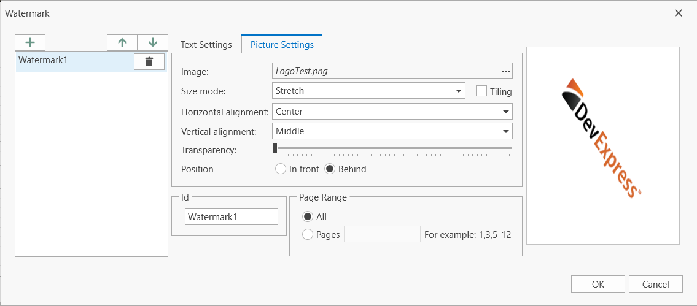
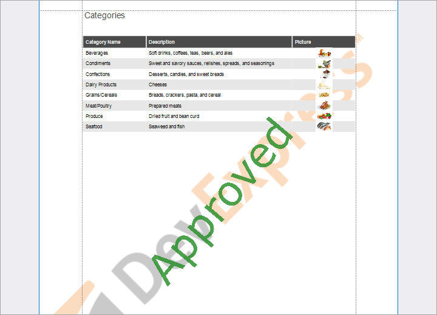
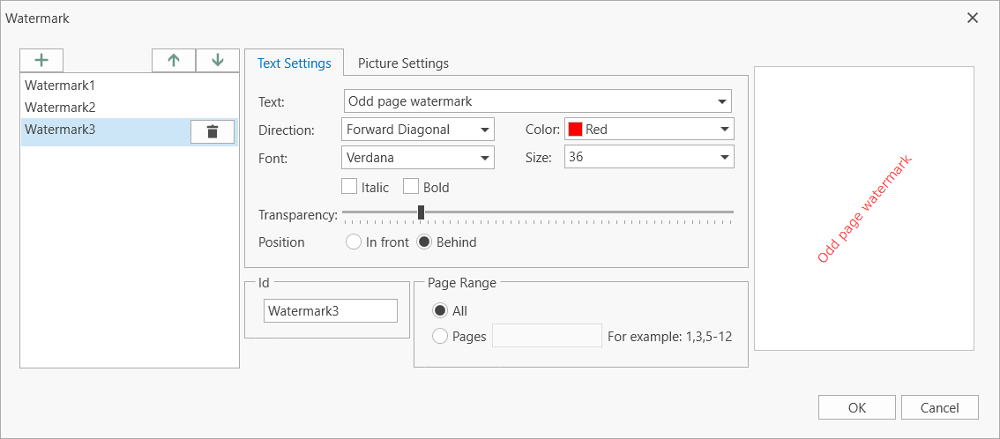
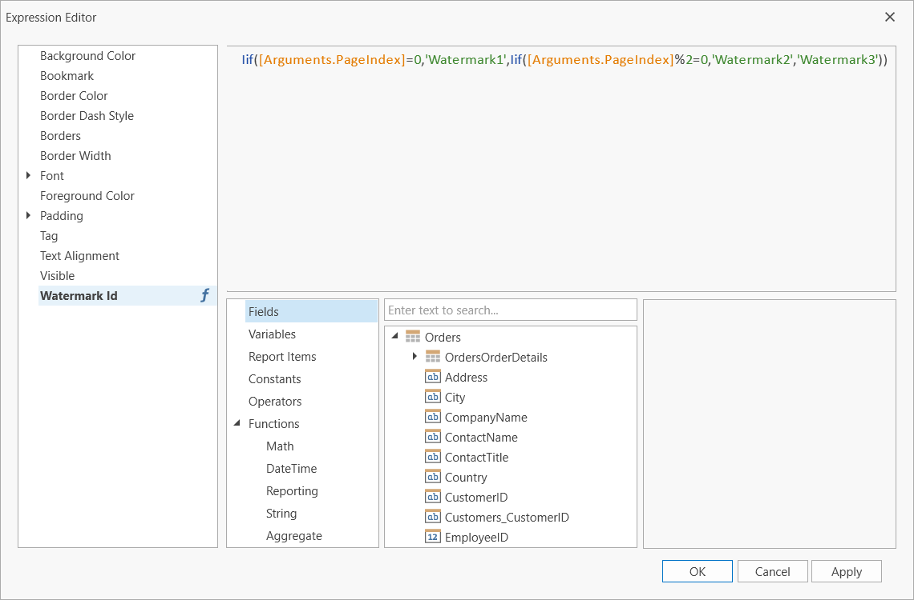
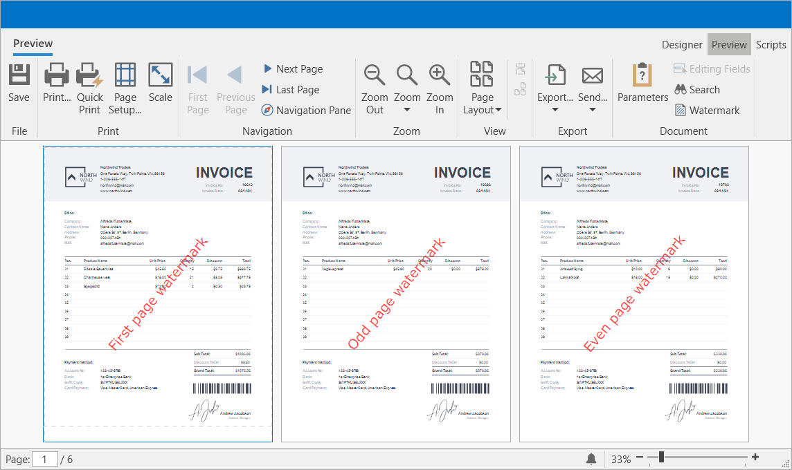

Create or Modify Watermarks of a Report
DevExpress Reporting allows you to display text and picture watermarks on report pages. You can also specify an expression that assigns different watermarks to pages.
How to add watermarks.
How to specify watermark settings.
How to use pre-printed forms.
Add a Watermark to a Report
Right-click the report, and in the invoked context menu, click the Watermark... link. In the invoked Watermarks dialog, add a new watermark and click either the Text Watermark or Picture Watermark tab, depending on the type of watermark you wish to add.
Specify Text Watermark Settings
Specify the following settings:

Text
The watermark’s text.
Direction
The incline of the watermark’s text.
Font
The font of the watermark’s text.
Color
The foreground color of the watermark’s text.
Size
The size of the watermark’s text.
Bold
Formats the watermark’s text as bold.
Italic
Formats the watermark’s text as italic.
Position
Specifies whether a watermark should be printed behind or in front of page content.
Transparency
The transparency of the watermark’s text.
Id
The unique identifier of a watermark used to specify the watermark in the WatermarkId property (See the Manage Watermark Collection section for details).
Page Range
The range of pages which contain a watermark.
Click OK to add a watermark to the watermark collection. The added watermark is automatically displayed in the report in Preview mode.
Note
A report can display only one watermark on a report page.
Specify Picture Watermark Settings
Specify an image. Click the Load image option’s Image button.
In the invoked Select Picture dialog, select the file containing the image that you wish to use as a watermark and click Open.
Specify the following picture options:

Size Mode
The mode in which a picture watermark is displayed.
Tiling
Specifies whether a picture watermark should be tiled.
Horizontal Alignment
Specifies the horizontal alignment of the watermark.
Vertical Alignment
Specifies the vertical alignment of the watermark.
Position
Specifies whether a watermark should be printed behind or in front of page content.
Transparency
The transparency of the watermark’s image. The Transparency property is unavailable when you specify an SVG image.
Id
The unique identifier of a watermark used to specify the watermark in the WatermarkId property (See the Manage Watermark Collection section for details).
Page Range
The range of pages which contain a watermark.
Click OK to add a watermark to the watermark collection. The added watermark is automatically displayed in the report in Preview mode.
Note
A report can display only one watermark on a report page.
Combine Text and a Picture in One Watermark
You can display both text and a picture in one watermark.
For example, create a watermark and specify its text and picture settings. Set position of the text to In front and the position of the picture to Behind.
As a result, in Preview mode the image is displayed behind the table, while the text is in front of the content:

Display a Specific Watermark in a Report
The report's Watermark Id property allows you to specify a watermark from the collection to display in the report by the watermark's unique identifier (the Id option's value of the watermark). This property has a priority over the watermark’s Page Range property.
Display Watermarks According to the Specified Condition
Bind Watermark Id to an expression to apply watermarks stored in the collection to specific report pages.
Create the “First page watermark”, “Even page watermark”, and “Odd page watermark” watermarks with the following settings:

Specify the expression in the report’s Watermark Id property:
Iif([Arguments.PageIndex]=0,'Watermark1',Iif([Arguments.PageIndex]%2=0,'Watermark2','Watermark3'))

The image below shows the result.
